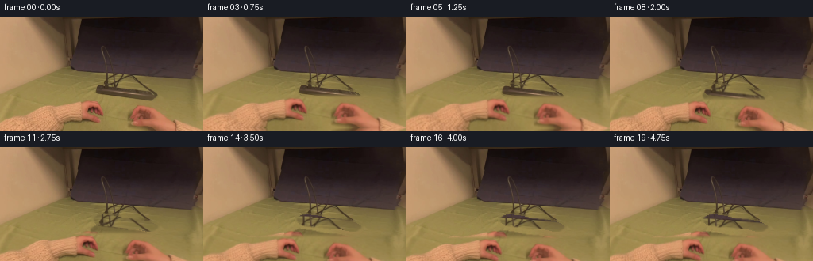
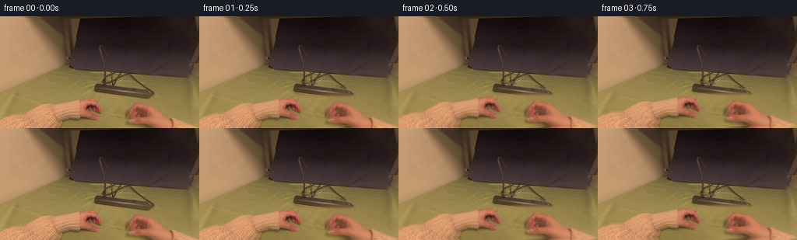
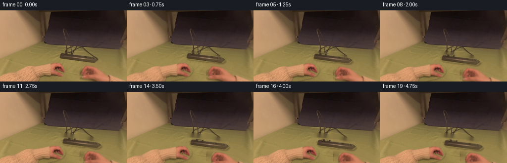
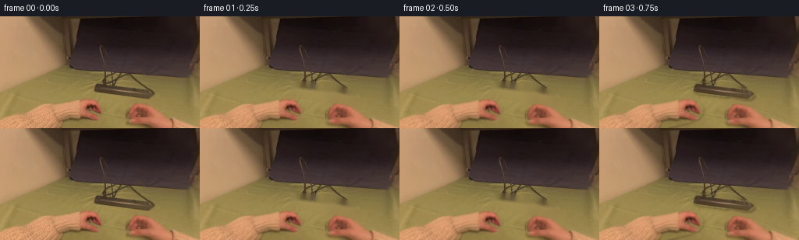

CODING AGENTS AS PIXEL WORLD MODELS
traex/DeepSeek-V4.1-Flash · common50_0021
点击播放 · 原生 RGB 像素
逐轮保存的候选
回放视频、检查图与代码变化。
每份候选均可单独播放。实际图片检查记录在下方工具轨迹中。
候选 01播放与检查图
点击播放 · 原生 RGB 像素


展开代码变化
--- 上一保存版本
+++ 本次保存版本
@@ -0,0 +1,167 @@
+from pathlib import Path
+
+import cv2
+import numpy as np
+from PIL import Image, ImageDraw, ImageFilter
+
+import artifact_io
+
+
+ROOT = Path(__file__).resolve().parent
+WIDTH = 256
+HEIGHT = 144
+FRAMES = 20
+
+
+def smoothstep(value):
+ value = np.clip(value, 0.0, 1.0)
+ return value * value * (3.0 - 2.0 * value)
+
+
+def polygon_mask(points, feather=1.2):
+ mask = Image.new("L", (WIDTH, HEIGHT), 0)
+ ImageDraw.Draw(mask).polygon(points, fill=255)
+ if feather:
+ mask = mask.filter(ImageFilter.GaussianBlur(feather))
+ return np.asarray(mask, dtype=np.float32) / 255.0
+
+
+def make_plug_mask(source):
+ rgb = source.astype(np.float32)
+ gray = cv2.cvtColor(source, cv2.COLOR_RGB2GRAY).astype(np.float32)
+ yy, xx = np.mgrid[0:HEIGHT, 0:WIDTH]
+
+ # The plug is the low, dark diagonal form immediately below the strip.
+ region = polygon_mask(
+ [
+ (116, 88),
+ (128, 84),
+ (143, 86),
+ (158, 89),
+ (174, 90),
+ (191, 95),
+ (202, 101),
+ (198, 107),
+ (183, 106),
+ (167, 102),
+ (153, 106),
+ (137, 103),
+ (124, 99),
+ (117, 94),
+ ],
+ feather=0.0,
+ )
+
+ dark = np.clip((113.0 - gray) / 35.0, 0.0, 1.0)
+ warmth = np.clip((rgb[:, :, 0] - rgb[:, :, 2] - 9.0) / 15.0, 0.0, 1.0)
+ seed = region * np.clip(0.72 * dark + 0.28 * warmth, 0.0, 1.0)
+ seed = (seed > 0.31).astype(np.uint8)
+
+ kernel = cv2.getStructuringElement(cv2.MORPH_ELLIPSE, (5, 5))
+ seed = cv2.morphologyEx(seed, cv2.MORPH_CLOSE, kernel, iterations=2)
+ seed = cv2.morphologyEx(seed, cv2.MORPH_OPEN, np.ones((3, 3), np.uint8), iterations=1)
+ seed = cv2.dilate(seed, np.ones((3, 3), np.uint8), iterations=1)
+
+ # Keep the extracted layer compact and reject isolated tabletop texture.
+ count, labels, stats, _ = cv2.connectedComponentsWithStats(seed)
+ keep = np.zeros_like(seed)
+ for index in range(1, count):
+ if stats[index, cv2.CC_STAT_AREA] >= 35:
+ keep[labels == index] = 1
+ alpha = cv2.GaussianBlur(keep.astype(np.float32), (5, 5), 0.9)
+ alpha *= region
+ alpha = np.clip(alpha, 0.0, 1.0)
+ return alpha
+
+
+def clean_plate(source, plug_alpha):
+ mask = (plug_alpha > 0.09).astype(np.uint8) * 255
+ mask = cv2.dilate(mask, np.ones((5, 5), np.uint8), iterations=1)
+ return cv2.inpaint(source, mask, 5, cv2.INPAINT_TELEA)
+
+
+def shift_image(image, dx, dy):
+ matrix = np.array([[1.0, 0.0, dx], [0.0, 1.0, dy]], dtype=np.float32)
+ return cv2.warpAffine(
+ image,
+ matrix,
+ (WIDTH, HEIGHT),
+ flags=cv2.INTER_LINEAR,
+ borderMode=cv2.BORDER_REFLECT_101,
+ )
+
+
+def composite(base, layer, alpha):
+ alpha3 = alpha[:, :, None]
+ return base * (1.0 - alpha3) + layer * alpha3
+
+
+def motion_for_frame(index):
+ if index <= 3:
+ grip = smoothstep(index / 3.0)
+ return -3.2 * grip, 0.4 * grip, 0.0, 0.0
+
+ if index <= 17:
+ pull = smoothstep((index - 3) / 14.0)
+ return (
+ -3.2 + 13.5 * pull,
+ -10.5 * pull,
+ -9.5 * pull,
+ 18.5 * pull,
+ )
+
+ settle = smoothstep((index - 17) / 2.0)
+ return -3.2 + 13.5 - 0.7 * settle, -10.5 - 0.6 * settle, -9.5 - 0.4 * settle, 18.5 + 0.8 * settle
+
+
+def render(source, plug_alpha, plate):
+ frames = []
+ hand_y0 = 102.0
+ yy = np.mgrid[0:HEIGHT, 0:WIDTH][0].astype(np.float32)
+
+ for index in range(FRAMES):
+ if index == 0:
+ frames.append(source.copy())
+ continue
+
+ hand_dy, hand_dx, plug_dx, plug_dy = motion_for_frame(index)
+ base = plate.astype(np.float32)
+
+ # A small contact shadow keeps the plug seated on the tabletop.
+ shadow_alpha = shift_image(plug_alpha * 0.24, plug_dx + 1.7, plug_dy + 2.2)
+ shadow = np.zeros_like(base)
+ base = composite(base, shadow, shadow_alpha)
+
+ moved_plug = shift_image(source.astype(np.float32), plug_dx, plug_dy)
+ base = composite(base, moved_plug, plug_alpha)
+
+ # The foreground hand moves as a photographic layer, occluding the
+ # lower edge of the plug while the fingers pull it free.
+ moved_lower = shift_image(plate.astype(np.float32), hand_dx, hand_dy)
+ hand_alpha = np.clip((yy - (hand_y0 + hand_dy - 3.0)) / 7.0, 0.0, 1.0)
+ hand_alpha = (hand_alpha * hand_alpha * (3.0 - 2.0 * hand_alpha))[:, :, None]
+ base = base * (1.0 - hand_alpha) + moved_lower * hand_alpha
+
+ # Restrained exposure drift avoids a frozen background.
+ exposure = 1.0 + 0.004 * np.sin(index * 0.48)
+ base *= exposure
+ frames.append(np.clip(base, 0.0, 255.0).astype(np.uint8))
+
+ return np.stack(frames)
+
+
+def main():
+ source = np.asarray(Image.open(ROOT / "first_frame.png").convert("RGB"), dtype=np.uint8)
+ assert source.shape == (HEIGHT, WIDTH, 3)
+
+ plug_alpha = make_plug_mask(source)
+ plate = clean_plate(source, plug_alpha)
+ frames = render(source, plug_alpha, plate)
+
+ Image.fromarray((plug_alpha * 255).astype(np.uint8)).save(ROOT / ".tmp" / "plug_mask.png")
+ Image.fromarray(plate).save(ROOT / ".tmp" / "clean_plate.png")
+ artifact_io.save(frames, ROOT)
+
+
+if __name__ == "__main__":
+ main()
候选 02播放与检查图
点击播放 · 原生 RGB 像素


展开代码变化
--- 上一保存版本
+++ 本次保存版本
@@ -18,7 +18,7 @@
return value * value * (3.0 - 2.0 * value)
-def polygon_mask(points, feather=1.2):
+def polygon_mask(points, feather=1.1):
mask = Image.new("L", (WIDTH, HEIGHT), 0)
ImageDraw.Draw(mask).polygon(points, fill=255)
if feather:
@@ -26,12 +26,28 @@
return np.asarray(mask, dtype=np.float32) / 255.0
+def shift_image(image, dx, dy, border=cv2.BORDER_REFLECT_101):
+ matrix = np.array([[1.0, 0.0, dx], [0.0, 1.0, dy]], dtype=np.float32)
+ return cv2.warpAffine(
+ image,
+ matrix,
+ (WIDTH, HEIGHT),
+ flags=cv2.INTER_LINEAR,
+ borderMode=border,
+ )
+
+
+def composite(base, layer, alpha):
+ alpha3 = alpha[:, :, None]
+ return base * (1.0 - alpha3) + layer * alpha3
+
+
def make_plug_mask(source):
rgb = source.astype(np.float32)
gray = cv2.cvtColor(source, cv2.COLOR_RGB2GRAY).astype(np.float32)
- yy, xx = np.mgrid[0:HEIGHT, 0:WIDTH]
-
- # The plug is the low, dark diagonal form immediately below the strip.
+
+ # The socket-mounted plug is the dark diagonal object at the lower edge
+ # of the strip. The polygon constrains the color extraction to that object.
region = polygon_mask(
[
(116, 88),
@@ -57,94 +73,171 @@
seed = region * np.clip(0.72 * dark + 0.28 * warmth, 0.0, 1.0)
seed = (seed > 0.31).astype(np.uint8)
- kernel = cv2.getStructuringElement(cv2.MORPH_ELLIPSE, (5, 5))
- seed = cv2.morphologyEx(seed, cv2.MORPH_CLOSE, kernel, iterations=2)
+ seed = cv2.morphologyEx(
+ seed, cv2.MORPH_CLOSE, cv2.getStructuringElement(cv2.MORPH_ELLIPSE, (5, 5)), iterations=2
+ )
seed = cv2.morphologyEx(seed, cv2.MORPH_OPEN, np.ones((3, 3), np.uint8), iterations=1)
seed = cv2.dilate(seed, np.ones((3, 3), np.uint8), iterations=1)
- # Keep the extracted layer compact and reject isolated tabletop texture.
count, labels, stats, _ = cv2.connectedComponentsWithStats(seed)
keep = np.zeros_like(seed)
for index in range(1, count):
if stats[index, cv2.CC_STAT_AREA] >= 35:
keep[labels == index] = 1
- alpha = cv2.GaussianBlur(keep.astype(np.float32), (5, 5), 0.9)
- alpha *= region
- alpha = np.clip(alpha, 0.0, 1.0)
- return alpha
-
-
-def clean_plate(source, plug_alpha):
- mask = (plug_alpha > 0.09).astype(np.uint8) * 255
- mask = cv2.dilate(mask, np.ones((5, 5), np.uint8), iterations=1)
- return cv2.inpaint(source, mask, 5, cv2.INPAINT_TELEA)
-
-
-def shift_image(image, dx, dy):
- matrix = np.array([[1.0, 0.0, dx], [0.0, 1.0, dy]], dtype=np.float32)
- return cv2.warpAffine(
- image,
- matrix,
- (WIDTH, HEIGHT),
- flags=cv2.INTER_LINEAR,
- borderMode=cv2.BORDER_REFLECT_101,
- )
-
-
-def composite(base, layer, alpha):
- alpha3 = alpha[:, :, None]
- return base * (1.0 - alpha3) + layer * alpha3
+
+ alpha = cv2.GaussianBlur(keep.astype(np.float32), (5, 5), 0.8)
+ return np.clip(alpha * region, 0.0, 1.0)
+
+
+def make_hand_masks(source):
+ rgb = source.astype(np.float32)
+ red = rgb[:, :, 0] - rgb[:, :, 1]
+ blue_gap = rgb[:, :, 0] - rgb[:, :, 2]
+ light = rgb.mean(axis=2)
+
+ # These silhouettes follow the two hands entering from the bottom. A
+ # gentle color prior removes flat tabletop at the polygon corners while
+ # keeping the dark finger creases inside each hand.
+ left_region = polygon_mask(
+ [
+ (0, 130),
+ (12, 126),
+ (28, 121),
+ (46, 115),
+ (66, 110),
+ (86, 106),
+ (105, 105),
+ (120, 106),
+ (130, 111),
+ (134, 117),
+ (133, 124),
+ (127, 131),
+ (115, 136),
+ (98, 140),
+ (83, 144),
+ (0, 144),
+ ],
+ feather=0.0,
+ )
+ right_region = polygon_mask(
+ [
+ (170, 111),
+ (184, 112),
+ (200, 117),
+ (216, 122),
+ (232, 129),
+ (247, 135),
+ (256, 139),
+ (256, 144),
+ (165, 144),
+ (164, 137),
+ (164, 128),
+ (165, 120),
+ (166, 115),
+ ],
+ feather=0.0,
+ )
+
+ skin = np.clip((red - 20.0) / 35.0, 0.0, 1.0)
+ saturation = np.clip((blue_gap - 35.0) / 35.0, 0.0, 1.0)
+ brightness = np.clip((light - 72.0) / 55.0, 0.0, 1.0)
+ evidence = np.clip(0.55 * skin + 0.25 * saturation + 0.20 * brightness, 0.0, 1.0)
+
+ masks = []
+ for region in (left_region, right_region):
+ soft = np.clip(0.70 + 0.38 * evidence, 0.0, 1.0) * region
+ mask = (soft > 0.60).astype(np.uint8)
+ mask = cv2.morphologyEx(
+ mask, cv2.MORPH_CLOSE, cv2.getStructuringElement(cv2.MORPH_ELLIPSE, (5, 5)), iterations=2
+ )
+
+ # Fill small creases and nail highlights, then use the constrained
+ # silhouette for the final alpha.
+ count, labels, stats, _ = cv2.connectedComponentsWithStats(mask)
+ keep = np.zeros_like(mask)
+ for index in range(1, count):
+ if stats[index, cv2.CC_STAT_AREA] >= 28:
+ keep[labels == index] = 1
+ keep = cv2.dilate(keep, np.ones((3, 3), np.uint8), iterations=1)
+
+ alpha = cv2.GaussianBlur(keep.astype(np.float32), (5, 5), 0.75)
+ alpha = np.maximum(alpha, 0.55 * region)
+ masks.append(np.clip(alpha * region, 0.0, 1.0))
+
+ return masks
+
+
+def clean_plate(source, plug_alpha, hand_masks):
+ mask = (plug_alpha > 0.08).astype(np.uint8)
+ for alpha in hand_masks:
+ mask |= (alpha > 0.12).astype(np.uint8)
+ mask = cv2.dilate(mask, np.ones((5, 5), np.uint8), iterations=1) * 255
+ return cv2.inpaint(source, mask, 4, cv2.INPAINT_TELEA)
def motion_for_frame(index):
- if index <= 3:
- grip = smoothstep(index / 3.0)
- return -3.2 * grip, 0.4 * grip, 0.0, 0.0
-
- if index <= 17:
- pull = smoothstep((index - 3) / 14.0)
- return (
- -3.2 + 13.5 * pull,
- -10.5 * pull,
- -9.5 * pull,
- 18.5 * pull,
- )
-
- settle = smoothstep((index - 17) / 2.0)
- return -3.2 + 13.5 - 0.7 * settle, -10.5 - 0.6 * settle, -9.5 - 0.4 * settle, 18.5 + 0.8 * settle
-
-
-def render(source, plug_alpha, plate):
+ if index <= 2:
+ grip = smoothstep(index / 2.0)
+ return {
+ "left": (-0.7 * grip, 0.4 * grip),
+ "right": (-0.8 * grip, 0.7 * grip),
+ "plug": (0.0, 0.0),
+ }
+
+ if index <= 16:
+ pull = smoothstep((index - 2) / 14.0)
+ return {
+ "left": (-0.7 - 2.2 * pull, 0.4 + 3.4 * pull),
+ "right": (-0.8 + 7.4 * pull, 0.7 + 9.8 * pull),
+ "plug": (8.0 * pull, 10.8 * pull),
+ }
+
+ settle = smoothstep((index - 16) / 3.0)
+ return {
+ "left": (-2.9 - 0.3 * settle, 3.8 + 0.4 * settle),
+ "right": (6.6 + 0.5 * settle, 10.5 + 0.5 * settle),
+ "plug": (8.0 + 0.45 * settle, 10.8 + 0.55 * settle),
+ }
+
+
+def shifted_alpha(alpha, dx, dy):
+ return shift_image(alpha, dx, dy, border=cv2.BORDER_CONSTANT)
+
+
+def add_soft_shadow(base, alpha, dx, dy, strength):
+ shadow_alpha = shifted_alpha(alpha, dx, dy)
+ shadow_alpha = cv2.GaussianBlur(shadow_alpha, (7, 7), 1.2) * strength
+ shadow = np.zeros_like(base)
+ return composite(base, shadow, shadow_alpha)
+
+
+def render(source, plug_alpha, hand_masks, plate):
frames = []
- hand_y0 = 102.0
- yy = np.mgrid[0:HEIGHT, 0:WIDTH][0].astype(np.float32)
+ source_float = source.astype(np.float32)
for index in range(FRAMES):
if index == 0:
frames.append(source.copy())
continue
- hand_dy, hand_dx, plug_dx, plug_dy = motion_for_frame(index)
+ motion = motion_for_frame(index)
base = plate.astype(np.float32)
- # A small contact shadow keeps the plug seated on the tabletop.
- shadow_alpha = shift_image(plug_alpha * 0.24, plug_dx + 1.7, plug_dy + 2.2)
- shadow = np.zeros_like(base)
- base = composite(base, shadow, shadow_alpha)
-
- moved_plug = shift_image(source.astype(np.float32), plug_dx, plug_dy)
- base = composite(base, moved_plug, plug_alpha)
-
- # The foreground hand moves as a photographic layer, occluding the
- # lower edge of the plug while the fingers pull it free.
- moved_lower = shift_image(plate.astype(np.float32), hand_dx, hand_dy)
- hand_alpha = np.clip((yy - (hand_y0 + hand_dy - 3.0)) / 7.0, 0.0, 1.0)
- hand_alpha = (hand_alpha * hand_alpha * (3.0 - 2.0 * hand_alpha))[:, :, None]
- base = base * (1.0 - hand_alpha) + moved_lower * hand_alpha
-
- # Restrained exposure drift avoids a frozen background.
- exposure = 1.0 + 0.004 * np.sin(index * 0.48)
- base *= exposure
+ plug_dx, plug_dy = motion["plug"]
+ if index > 2:
+ base = add_soft_shadow(base, plug_alpha, plug_dx + 1.8, plug_dy + 2.1, 0.30)
+ moved_plug_alpha = shifted_alpha(plug_alpha, plug_dx, plug_dy)
+ moved_plug = shift_image(source_float, plug_dx, plug_dy)
+ base = composite(base, moved_plug, moved_plug_alpha)
+
+ for name, alpha in zip(("left", "right"), hand_masks):
+ dx, dy = motion[name]
+ if index > 2:
+ base = add_soft_shadow(base, alpha, dx + 1.3, dy + 1.7, 0.18)
+ moved_alpha = shifted_alpha(alpha, dx, dy)
+ moved_hand = shift_image(source_float, dx, dy)
+ base = composite(base, moved_hand, moved_alpha)
+
frames.append(np.clip(base, 0.0, 255.0).astype(np.uint8))
return np.stack(frames)
@@ -155,11 +248,16 @@
assert source.shape == (HEIGHT, WIDTH, 3)
plug_alpha = make_plug_mask(source)
- plate = clean_plate(source, plug_alpha)
- frames = render(source, plug_alpha, plate)
-
- Image.fromarray((plug_alpha * 255).astype(np.uint8)).save(ROOT / ".tmp" / "plug_mask.png")
- Image.fromarray(plate).save(ROOT / ".tmp" / "clean_plate.png")
+ hand_masks = make_hand_masks(source)
+ plate = clean_plate(source, plug_alpha, hand_masks)
+ frames = render(source, plug_alpha, hand_masks, plate)
+
+ tmp = ROOT / ".tmp"
+ tmp.mkdir(exist_ok=True)
+ Image.fromarray((plug_alpha * 255).astype(np.uint8)).save(tmp / "plug_mask.png")
+ for name, alpha in zip(("left_hand_mask", "right_hand_mask"), hand_masks):
+ Image.fromarray((alpha * 255).astype(np.uint8)).save(tmp / f"{name}.png")
+ Image.fromarray(plate).save(tmp / "clean_plate.png")
artifact_io.save(frames, ROOT)
可观测工具轨迹
实际执行的命令与返回图片。
命令 1exit 0
/bin/bash -c "pwd && rg --files -g 'prompt.txt' -g 'GENERATION_RULES.md' -g 'first_frame.png' -g '"'!*.mp4'"'"
命令 2exit 0
/bin/bash -c 'ls -la'
命令 3exit 0
/bin/bash -c 'git status --short'
命令 4exit 0
/bin/bash -c 'cat prompt.txt'
命令 5exit 0
/bin/bash -c 'cat GENERATION_RULES.md'
命令 6exit 0
/bin/bash -c 'cat task_spec.json'
命令 7exit 0
/bin/bash -c "sed -n '1,240p' artifact_io.py"
命令 8exit 0
/bin/bash -c "python - <<'PY'
from PIL import Image
import numpy as np
im=Image.open('first_frame.png').convert('RGB')
a=np.asarray(im)
print(im.size, a.shape, a.dtype)
print('min', a.min((0,1)), 'max', a.max((0,1)), 'mean', a.mean((0,1)))
q=(a//32)*32
colors,counts=np.unique(q.reshape(-1,3),axis=0,return_counts=True)
for c,n in sorted(zip(colors,counts), key=lambda x:-x[1])[:20]: print(tuple(c),n,round(100*n/(a.shape[0]*a.shape[1]),2))
PY"命令 9exit 0
/bin/bash -c "python - <<'PY'
from PIL import Image
import numpy as np
im=np.asarray(Image.open('first_frame.png').convert('RGB')).astype(float)
# sample 2x2 average and print luminance/hue symbols at 128x72
h,w=im.shape[:2]
a=im.reshape(h//2,2,w//2,2,3).mean((1,3))
lum=a@[.299,.587,.114]
chars=' .:-=+*#%@'
for y in range(0,72,2):
print(''.join(chars[min(9,int(v/256*10))] for v in lum[y]))
PY"命令 10exit 0
/bin/bash -c "python - <<'PY'
from PIL import Image
import numpy as np
from sklearn.cluster import KMeans
im=np.asarray(Image.open('first_frame.png').convert('RGB'))
h,w=im.shape[:2]
a=im.reshape(-1,3)
km=KMeans(n_clusters=10, random_state=1, n_init=10).fit(a[::4])
lbl=km.predict(a).reshape(h,w)
chars='0123456789'
print('clusters:')
for i,c in enumerate(km.cluster_centers_):
ys,xs=np.where(lbl==i)
print(i, tuple(np.round(c).astype(int)), 'n',len(xs),'bbox', (xs.min(),ys.min(),xs.max(),ys.max()), 'centroid', (round(xs.mean(),1),round(ys.mean(),1)))
print('\\nmap 2x2 blocks, x axis each char=2px y each row=4px:')
for y in range(0,h,4):
row=[]
for x in range(0,w,2):
vals,cts=np.unique(lbl[y:y+4,x:x+2],return_counts=True)
row.append(chars[vals[np.argmax(cts)]])
print(''.join(row))
PY"命令 11exit 0
/bin/bash -c "python - <<'PY'
from PIL import Image, ImageDraw
import numpy as np
im=Image.open('first_frame.png').convert('RGB')
a=np.asarray(im)
# upscale with coordinate grid labels every 16 pixels, save temp
scale=4
up=im.resize((256*scale,144*scale),Image.Resampling.NEAREST)
d=ImageDraw.Draw(up)
for x in range(0,256,16):
d.line((x*scale,0,x*scale,144*scale),fill=(0,255,255),width=1)
d.text((x*scale+2,2),str(x),fill=(0,255,255))
for y in range(0,144,16):
d.line((0,y*scale,256*scale,y*scale),fill=(0,255,255),width=1)
d.text((2,y*scale+2),str(y),fill=(0,255,255))
up.save('.tmp/grid.png')
# print edges / local color samples every 8
print('sampled RGB grid rows y, columns x=0..248 step8')
for y in range(8,144,16):
print('y',y, [tuple(a[y,x]) for x in range(8,256,24)])
PY"命令 12exit 0
/bin/bash -c "python - <<'PY'
import cv2, numpy as np
im=cv2.imread('first_frame.png')
rgb=im[:,:,::-1]
hsv=cv2.cvtColor(im,cv2.COLOR_BGR2HSV)
for name,mask in [
('dark',(rgb.max(2)<70).astype('uint8')),
('verydark',(rgb.max(2)<45).astype('uint8')),
('skin',cv2.inRange(hsv,np.array([0,50,80]),np.array([25,255,255]))),
('skin2',cv2.inRange(hsv,np.array([0,25,70]),np.array([20,255,255]))),
('yellow',cv2.inRange(hsv,np.array([20,40,60]),np.array([45,255,255]))),
('blue',cv2.inRange(hsv,np.array([90,30,30]),np.array([140,255,255]))),
]:
n, lab, stats, cents=cv2.connectedComponentsWithStats(mask)
print('\\n',name,'pixels',int(mask.sum()),'components')
inds=sorted(range(1,n),key=lambda i:-stats[i,cv2.CC_STAT_AREA])[:15]
for i in inds:
x,y,w,h,a=stats[i]; print(a,(x,y,w,h),tuple(np.round(cents[i],1)))
PY"命令 13exit 0
/bin/bash -c "python - <<'PY'
import cv2, numpy as np
from PIL import Image
im=cv2.imread('first_frame.png')
g=cv2.cvtColor(im,cv2.COLOR_BGR2GRAY)
for low,high in [(20,50),(30,70),(40,90)]:
e=cv2.Canny(g,low,high)
lines=cv2.HoughLinesP(e,1,np.pi/180,threshold=12,minLineLength=10,maxLineGap=3)
print('\\nthreshold',low,high,'edges',e.sum()//255)
if lines is not None:
for x1,y1,x2,y2 in sorted(lines[:,0], key=lambda q: -((q[2]-q[0])**2+(q[3]-q[1])**2))[:30]:
print((x1,y1,x2,y2),'len',round(((x2-x1)**2+(y2-y1)**2)**.5,1))
cv2.imwrite('.tmp/edges.png',e)
PY"命令 14exit 0
/bin/bash -c "python - <<'PY'
from PIL import Image
import numpy as np
im=np.asarray(Image.open('first_frame.png').convert('RGB'))
h,w=im.shape[:2]
# coarse class by RGB: bright skin/beige, dark, yellow/brown, green/blue etc
for y in range(0,h,3):
row=''
for x in range(0,w,2):
p=im[y:y+3,x:x+2].mean((0,1)); r,g,b=p
if r<55 and g<50 and b<50: c='#'
elif r<100 and g<85 and b<75: c='D'
elif r>170 and g>125 and b>80 and r-g>20: c='S' # skin/bright
elif g>r*0.8 and g>b*1.25: c='Y'
elif r>g*1.2 and r>b*1.4: c='R'
elif r>140 and g>110 and b>60: c='.'
else: c=' '
row+=c
print(f'{y:3d} '+row)
PY"命令 15exit 0
/bin/bash -c "python - <<'PY'
from PIL import Image
import numpy as np
im=np.asarray(Image.open('first_frame.png').convert('RGB'))
# Print runs along selected rows/cols with mean colors
for y in [10,30,50,60,65,70,75,80,85,90,95,100,110,120,130,140]:
print('\\ny=',y)
prev=None; start=0
for x in range(257):
if x<256:
p=tuple((im[y,x]//16*16).tolist())
if x==256 or (prev is not None and p"'!=prev):
if x-start>=3: print(f'"' x{start:3d}-{x-1:3d}: {prev}')
start=x; prev=p
PY"命令 16exit 0
/bin/bash -c "python - <<'PY'
import cv2,numpy as np
im=cv2.imread('first_frame.png')
for m in ['bilateral','median','gaussian']:
if m=='bilateral': out=cv2.bilateralFilter(im,9,40,40)
elif m=='median': out=cv2.medianBlur(im,5)
else: out=cv2.GaussianBlur(im,(5,5),0)
cv2.imwrite(f'.tmp/{m}.png',out)
# print quantized luminance maps 128x72 every 4 rows to inspect large forms
im=np.asarray(cv2.cvtColor(cv2.imread('first_frame.png'),cv2.COLOR_BGR2RGB)).astype(float)
lum=im@[.299,.587,.114]
chars=' .:-=+*#%@'
for y in range(0,144,4):
print(''.join(chars[min(9,int(lum[y:y+4,x:x+2].mean()/256*10))] for x in range(0,256,2)))
PY"命令 17exit 0
/bin/bash -c "python - <<'PY'
from PIL import Image
import numpy as np
im=np.asarray(Image.open('first_frame.png').convert('RGB'))
h,w=im.shape[:2]
# HSV using colorsys vectorized cv2
import cv2
hsv=cv2.cvtColor(im,cv2.COLOR_RGB2HSV)
# sample histogram of hue, saturation, value
print('image',im.shape)
for name,arr,bins in [('R',im[:,:,0],[0,32,64,96,128,160,192,224,256]),('G',im[:,:,1],[0,32,64,96,128,160,192,224,256]),('B',im[:,:,2],[0,32,64,96,128,160,192,224,256]),('H',hsv[:,:,0],[0,10,20,30,40,60,80,100,120,150,180]),('S',hsv[:,:,1],[0,30,60,90,120,150,180,210,240,256]),('V',hsv[:,:,2],[0,30,60,90,120,150,180,210,240,256])]:
hist,_=np.histogram(arr,bins=bins)
print(name, list(zip([f'{bins[i]}-{bins[i+1]-1}' for i in range(len(hist))],hist.tolist())))
# sample representative pixels at grid
for y in range(8,144,16):
print('row',y)
for x in range(8,256,32):
print(f'({x:3d},{y:3d})={tuple(im[y,x])}',end=' ')
print()
PY"命令 18exit 0
/bin/bash -c "python - <<'PY'
from PIL import Image
import numpy as np
im=np.asarray(Image.open('first_frame.png').convert('RGB'))
h,w=im.shape[:2]
for y in range(0,h,2):
row=''
for x in range(0,w,2):
p=im[y:y+2,x:x+2].mean((0,1)); r,g,b=p
if r<28 and g<22 and b<20: c='#'
elif r<45 and g<35 and b<32: c='O'
elif r<65 and g<55 and b<50: c='o'
elif r<95 and g<85 and b<75: c='d'
elif r>175 and g>125 and b>75 and r-g>25: c='S'
elif r>120 and g>100 and b<90 and g>b*1.2: c='Y'
else: c='.'
row+=c
print(f'{y:3d} '+row)
PY"命令 19exit 0
/bin/bash -c "python - <<'PY'
import cv2,numpy as np
im=cv2.imread('first_frame.png')
g=cv2.cvtColor(im,cv2.COLOR_BGR2GRAY)
clahe=cv2.createCLAHE(clipLimit=4,tileGridSize=(8,8)).apply(g)
cv2.imwrite('.tmp/gray_clahe.png',clahe)
chars=' .:-=+*#%@'
for y in range(0,144,3):
print(f'{y:3d} '+''.join(chars[min(9,int(clahe[y:y+3,x:x+2].mean()/256*10))] for x in range(0,256,2)))
PY"命令 20exit 0
/bin/bash -c "python - <<'PY'
import cv2,numpy as np
im=cv2.imread('first_frame.png')
hsv=cv2.cvtColor(im,cv2.COLOR_BGR2HSV)
# classify dark neutral vs dark reddish vs brown; print bins on grid 4px
for y in range(0,144,4):
row=''
for x in range(0,256,2):
p=im[y:y+4,x:x+2].mean((0,1))[::-1]
r,g,b=p
mx=max(p); mn=min(p); sat=(mx-mn)/(mx+1e-3)
if mx<42: c='#'
elif mx<65 and sat<.28: c='o'
elif mx<85: c='d'
elif mx<115 and sat>.25: c='b'
elif r>g*1.25 and g>b*1.12: c='S'
elif g>b*1.18: c='Y'
elif r>180 and g>140: c='.'
else: c=' '
row+=c
print(f'{y:3d} '+row)
PY"命令 21exit 0
/bin/bash -c "python - <<'PY'
import cv2,numpy as np
im=cv2.imread('first_frame.png')
# inspect color at coordinates chosen around possible plug/hand
coords=[]
for y in range(36,108,4):
for x in range(90,250,8): coords.append((x,y))
# Print just dark components with local shape on downsample using ascii at 1 char per 2x2 around x80..255,y25..110
for y in range(24,112,2):
row=''
for x in range(72,256,2):
p=im[y:y+2,x:x+2].mean((0,1))[::-1]
r,g,b=p; v=max(p); sat=(v-min(p))/(v+1e-6)
if v<35:c='#'
elif v<55 and sat<.25:c='@'
elif v<75 and sat<.3:c='O'
elif v<100 and sat<.3:c='o'
elif v<130 and sat<.35:c='d'
elif r>g*1.35 and g>b*1.1:c='S'
elif g>b*1.3:c='Y'
else:c='.'
row+=c
print(f'{y:3d} '+row)
PY"命令 22exit 0
/bin/bash -c "python - <<'PY'
from PIL import Image
import numpy as np
im=Image.open('first_frame.png')
# save 8 crops at 4x to inspect likely plug / strip. These are generated intermediate.
regions={
'strip':(80,0,256,110),
'hand':(0,90,180,144),
'center':(70,30,210,130),
'plug':(90,55,190,115),
'right':(150,20,256,125),
}
for name,box in regions.items():
crop=im.crop(box).resize(((box[2]-box[0])*5,(box[3]-box[1])*5),Image.Resampling.NEAREST)
crop.save(f'.tmp/{name}.png')
print(name, box, crop.size)
PY"命令 23exit 0
/bin/bash -c "python - <<'PY'
# Analyze hand-ish segmentation in bottom half using color clusters and geometry
import cv2,numpy as np
im=cv2.imread('first_frame.png'); rgb=im[:,:,::-1]
hsv=cv2.cvtColor(im,cv2.COLOR_BGR2HSV)
# values in HSV
for y in [100,105,110,115,120,125,130,135,140,143]:
print('\\ny',y)
for x in range(0,256,8): print(f'{x}:{tuple(rgb[y,x])}',end=' ')
print()
PY"命令 24exit 1
/bin/bash -c "python - <<'PY'
from PIL import Image
import numpy as np
a=np.asarray(Image.open('first_frame.png').convert('RGB')).astype(int)
for y in range(0,145,4):
print('y',y)
for label,mask in [
('black',a[y,:,0]<45),
('dark',a[y,:,0]<75),
('gray',(a[y,:,0]>=45)&(a[y,:,0]<100)),
('skin',(a[y,:,0]>180)&(a[y,:,1]>120)&(a[y,:,2]<130)),
]:
m=mask
# runs > 2
d=np.diff(np.r_[False,m,False].astype(int)); starts=np.flatnonzero(d==1); ends=np.flatnonzero(d==-1)-1
runs=[(int(s),int(e)) for s,e in zip(starts,ends) if e-s>=2]
print(' ',label, runs[:12])
PY"命令 25exit 0
/bin/bash -c "python - <<'PY'
import cv2,numpy as np
im=cv2.imread('first_frame.png')
rgb=im[:,:,::-1]
# Luminance / chroma maps zoom center; print every pixel around x120-190 y60-120 as chars by brightness and hue
chars=' .:-=+*#%@'
for y in range(50,122,2):
row=''
for x in range(100,210,1):
p=rgb[y,x].astype(float); lum=p@[.299,.587,.114]
# brightness only
row+=chars[min(9,int(lum/256*10))]
print(f'{y:3d} '+row)
PY"命令 26exit 0
/bin/bash -c "python - <<'PY'
from PIL import Image
import numpy as np
a=np.asarray(Image.open('first_frame.png').convert('RGB'))
# list local extrema / dark regions within center to infer contours. Show dark mask x100:210 y30:110 at 1 char per pixel (2x2 downsample)
for y in range(30,112,2):
row=''
for x in range(100,212,2):
p=a[y:y+2,x:x+2].mean((0,1))
if p.mean()<65: row+='#'
elif p.mean()<90: row+='O'
elif p.mean()<120: row+='o'
elif p.mean()<155: row+='.'
else: row+=' '
print(f'{y:3d} '+row)
PY"命令 27exit 0
/bin/bash -c "python - <<'PY'
from PIL import Image
import numpy as np
a=np.asarray(Image.open('first_frame.png').convert('RGB'))
# visualize 4-color zones in x90-250,y35-110 using exact mean and letters
for y in range(36,110,2):
row=''
for x in range(88,252,2):
p=a[y:y+2,x:x+2].mean((0,1)); r,g,b=p
if r<60 and g<50 and b<50: c='#'
elif r<80 and g<70 and b<65: c='D'
elif r<105 and g<95 and b<85: c='d'
elif r>140 and g>115 and b<105 and g>b*1.22: c='Y'
elif r>g*1.25 and g>b*1.08: c='S'
else: c='.'
row+=c
print(f'{y:3d} '+row)
PY"命令 28exit 0
/bin/bash -c "python - <<'PY'
import cv2,numpy as np
im=cv2.imread('first_frame.png')
# print grayscale values of possible plug region around x130-160 y65-105
for y in range(60,108):
print(f'{y:3d}', ' '.join(f'{int(cv2.cvtColor(im[y:y+1,x:x+1],cv2.COLOR_BGR2GRAY)[0,0]):3d}' for x in range(128,164)))
PY"命令 29exit 0
/bin/bash -c "python - <<'PY'
import numpy as np
from PIL import Image
im=np.asarray(Image.open('first_frame.png').convert('RGB'))
# measure edge gradients in likely plug area x130-160 y70-100
lum=im@[.299,.587,.114]
gy,gx=np.gradient(lum)
for y in range(68,102):
vals=[]
for x in range(125,168):
if abs(gx[y,x])+abs(gy[y,x])>15: vals.append((x,y,round(gx[y,x],1),round(gy[y,x],1)))
if vals: print(y, vals[:20])
PY"命令 30exit 0
/bin/bash -c "python - <<'PY'
from PIL import Image
import numpy as np
a=np.asarray(Image.open('first_frame.png').convert('RGB'))
for y in [65,68,70,72,74,76,80,84,88,92,96,100,104,108,112,116,120]:
print('\\ny',y)
for x in range(80,231,5):
r,g,b=a[y,x]
print(f'{x}:{r:3d},{g:3d},{b:3d}',end=' ')
print()
PY"命令 31exit 0
/bin/bash -c "python - <<'PY'
from PIL import Image
import numpy as np
a=np.asarray(Image.open('first_frame.png').convert('RGB')).astype(np.float32)
# Fit a base brown tabletop gradient using low-variance region y>70 except dark object x115-205
ys,xs=np.mgrid[0:144,0:256]
mask=(ys>=70)&~((xs>=115)&(xs<=205)&(ys>=70)&(ys<=110))
# fit polynomial x,y,x2,y2,xy to RGB
X=np.stack([np.ones_like(xs),xs,ys,xs*xs,ys*ys,xs*ys],-1).astype(np.float32)
coef=[]
for c in range(3): coef.append(np.linalg.lstsq(X[mask],a[:,:,c][mask],rcond=None)[0])
pred=np.stack([X@coef[c] for c in range(3)],-1)
res=a-pred
print('coef',np.round(np.array(coef),3))
print('res mean std',res[mask].mean(0),res[mask].std(0))
# print residual magnitude map (table area) at every 4 pix
mag=np.sqrt((res**2).sum(2))
for y in range(68,144,4):
print(f'{y:3d} '+''.join(' .:-=+*#%@'[min(9,int(mag[y:y+4,x:x+2].mean()/35*10))] for x in range(0,256,2)))
PY"命令 32exit 0
/bin/bash -c "python - <<'PY'
import cv2,numpy as np
im=cv2.imread('first_frame.png')
rgb=im[:,:,::-1]
# classify dark pixels hue: neutral vs brown/red based on channel differences
for y in range(55,112,2):
row=''
for x in range(90,251,2):
p=rgb[y:y+2,x:x+2].mean((0,1)); r,g,b=p; v=p.mean()
if v>90:c=' '
elif r-b>14 and r-g>10:c='r'
elif r-g>5:c='b'
elif v<60:c='#'
else:c='o'
row+=c
print(f'{y:3d} '+row)
PY"命令 33exit 0
/bin/bash -c "python - <<'PY'
import numpy as np
from PIL import Image
im=np.asarray(Image.open('first_frame.png').convert('RGB')).astype(float)
lum=im@[.299,.587,.114]
for y in range(68,106):
# find dark minima x110-200 (below 100)
inds=np.flatnonzero(lum[y,110:205]<95)+110
if len(inds):
# runs
d=np.diff(np.r_[False,np.isin(np.arange(110,205),inds),False].astype(int)); st=np.flatnonzero(d==1)+110; en=np.flatnonzero(d==-1)-1+110
print(y, [(int(a),int(b),round(lum[y,a:b+1].mean(),1)) for a,b in zip(st,en)])
PY"命令 34exit 0
/bin/bash -c "python - <<'PY'
import numpy as np
from PIL import Image
im=np.asarray(Image.open('first_frame.png').convert('RGB')).astype(float)
# Print dark component shape threshold mean <90 in x90..250 y35..110
m=(im.mean(2)<90)
# connected components
import cv2
n,lab,stats,cents=cv2.connectedComponentsWithStats(m.astype('uint8'))
for i in range(1,n):
x,y,w,h,a=stats[i]
if a>100: print(i,a,(x,y,w,h),cents[i])
# show boundary contour of largest component near center
idx=max(range(1,n),key=lambda i:stats[i,4])
mask=(lab==idx)
for y in range(30,115,2):
row=''
for x in range(85,256,2):
row += '#' if mask[y:y+2,x:x+2].mean()>.4 else ' '
print(f'{y:3d} '+row)
PY"命令 35exit 0
/bin/bash -c "python - <<'PY'
from PIL import Image
import numpy as np
im=np.asarray(Image.open('first_frame.png').convert('RGB')).astype(float)
# HSV sample around potential plug: x120-210 y70-105, print hue bucket map at 2px resolution
import cv2
hsv=cv2.cvtColor(im.astype('uint8'),cv2.COLOR_RGB2HSV)
for y in range(68,108,2):
row=''
for x in range(115,216,2):
h,s,v=hsv[y:y+2,x:x+2].reshape(-1,3).mean(0)
if v<35:c='#'
elif v<55 and s<50:c='@'
elif v<80 and s<50:c='O'
elif v<105:c='o'
elif h<10 and s>80:c='R'
elif h<25 and s>80:c='Y'
elif s<50:c='n'
else:c='.'
row+=c
print(f'{y:3d} '+row)
PY"命令 36exit 0
/bin/bash -c "python - <<'PY'
import numpy as np, cv2
from PIL import Image
im=np.asarray(Image.open('first_frame.png').convert('RGB')).astype(np.float32)
# Compute edge-energy and darkness profiles over grid to estimate main rectangular object corners.
g=cv2.cvtColor(im.astype('uint8'),cv2.COLOR_RGB2GRAY).astype(float)
for y in range(0,144,8):
print('y',y,'dark xs',end=' ')
xs=np.flatnonzero(g[y]<70)
# runs
if len(xs):
d=np.diff(np.r_[False,np.isin(np.arange(256),xs),False].astype(int)); st=np.flatnonzero(d==1); en=np.flatnonzero(d==-1)-1
print([(int(a),int(b)) for a,b in zip(st,en) if b-a>5])
else: print([])
PY"命令 37exit 0
/bin/bash -c "python - <<'PY'
import cv2,numpy as np
im=cv2.imread('first_frame.png'); rgb=im[:,:,::-1]
# use LAB or ratio to detect true black plug: low value and low red dominance
hsv=cv2.cvtColor(im,cv2.COLOR_BGR2HSV)
for name,mask in [
('v<45',hsv[:,:,2]<45),
('v<60 s<45',(hsv[:,:,2]<60)&(hsv[:,:,1]<45)),
('v<75 s<35',(hsv[:,:,2]<75)&(hsv[:,:,1]<35)),
('v<100 s<25',(hsv[:,:,2]<100)&(hsv[:,:,1]<25)),
]:
print('\\n'+name)
for y in range(34,112,4):
row=''
for x in range(90,251,2): row += '#' if mask[y:y+4,x:x+2].mean()>.4 else ' '
print(f'{y:3d} '+row)
PY"命令 38exit 0
/bin/bash -c "python - <<'PY'
from PIL import Image
import numpy as np
a=np.asarray(Image.open('first_frame.png').convert('RGB'))
# Print RGB around x130-210 y75-105 in compact table every 2 px, map luminance
chars=' .:-=+*#%@'
for y in range(74,106,1):
print(f'{y:3d} '+''.join(chars[min(9,int((a[y,x].astype(float)@[.299,.587,.114])/256*10))] for x in range(110,211)))
PY"命令 39exit 0
/bin/bash -c "python - <<'PY'
from PIL import Image
import numpy as np
a=np.asarray(Image.open('first_frame.png').convert('RGB')).astype(int)
# print exact ranges for key chroma signature at rows
for y in range(40,72,2):
print('y',y)
# segment by classes and print runs
p=a[y]
cls=[]
for r,g,b in p:
if r<50 and g<40 and b<38: c='K'
elif r<80 and g<65 and b<60: c='D'
elif r>150 and g>115 and b>70 and r-g>15: c='S'
elif r-g>12 and g-b>6: c='B'
elif g-b>20 and r>90: c='Y'
else:c='.'
cls.append(c)
s=''.join(cls)
# run summary
runs=[]; st=0; cur=s[0]
for i in range(1,256):
if s[i]"'!=cur:
if i-st>=4:runs.append((st,i-1,cur))
st=i;cur=s[i]
if 256-st>=4:runs.append((st,255,cur))
print(runs)
PY'命令 40exit 0
/bin/bash -c "python - <<'PY'
import cv2,numpy as np
im=cv2.imread('first_frame.png')
rgb=im[:,:,::-1].astype(float)
hsv=cv2.cvtColor(im,cv2.COLOR_BGR2HSV).astype(float)
# Print hsv and rgb for x 120..180 at y 74,82,88,92,96,100
for y in [74,82,88,92,96,100]:
print('\\nrow',y)
for x in range(118,182,4): print(f'{x}:{tuple(rgb[y,x].astype(int))} h{int(hsv[y,x,0])} s{int(hsv[y,x,1])} v{int(hsv[y,x,2])}',end=' | ')
print()
PY"命令 41exit 0
/bin/bash -c "which chafa || true; which viu || true; which jp2 || true; which img2txt || true; which ffmpeg || true; python - <<'PY'
import PIL, numpy
print('PIL',PIL.__version__,'numpy',numpy.__version__)
PY"命令 42exit 0
/bin/bash -c "python - <<'PY'
import numpy as np
from PIL import Image
a=np.asarray(Image.open('first_frame.png').convert('RGB')).astype(int)
# Color segmentation print: classify each pixel into nearest of manually identified palette, at 2x2 blocks x80..256 y30..110
pal=np.array([[28,19,19],[48,38,36],[65,51,50],[78,62,54],[105,88,61],[125,109,64],[145,128,75],[160,139,80],[210,153,108],[180,90,72],[70,52,34]])
labels='#@oO.dbYySrs'
for y in range(30,110,2):
row=''
for x in range(80,256,2):
p=a[y:y+2,x:x+2].mean((0,1))
i=np.argmin(((pal-p)**2).sum(1))
row+=labels[i]
print(f'{y:3d} '+row)
PY"命令 43exit 0
/bin/bash -c "python - <<'PY'
import cv2,numpy as np
from PIL import Image
a=np.asarray(Image.open('first_frame.png').convert('RGB')).astype(np.int16)
r,g,b=a[:,:,0],a[:,:,1],a[:,:,2]
for desc,m in [
('skin1',(r-g>35)&(r-b>75)&(r>140)),
('skin2',(r-g>25)&(r-b>65)&(r>130)),
('skin3',(r-g>40)&(r-b>80)&(r>150)),
]:
m=(m & (np.indices(m.shape)[0]>80)).astype('uint8')
# close and open
k=cv2.getStructuringElement(cv2.MORPH_ELLIPSE,(3,3))
m=cv2.morphologyEx(m,cv2.MORPH_CLOSE,k,iterations=2)
m=cv2.morphologyEx(m,cv2.MORPH_OPEN,k,iterations=1)
n,lab,stats,cents=cv2.connectedComponentsWithStats(m)
print('\\n',desc,'pixels',m.sum())
for i in range(1,n):
x,y,w,h,area=stats[i]
if area>20: print(i,area,(x,y,w,h),tuple(np.round(cents[i],1)))
for y in range(80,144,2):
print(f'{y:3d} '+''.join('#' if m[y:y+2,x:x+2].mean()>.4 else ' ' for x in range(0,256,2)))
PY"命令 44exit 0
/bin/bash -c "python - <<'PY'
import cv2,numpy as np
from PIL import Image
im=cv2.imread('first_frame.png')
# Try GrabCut with center rectangle around suspected plug/hand? no interactive. Try contour of dark strip and use known geometry.
# save center crop 10x nearest with only 4-color quantization to inspect shapes as ascii via KMeans exact labels
from sklearn.cluster import KMeans
rgb=cv2.cvtColor(im,cv2.COLOR_BGR2RGB)
a=rgb[30:110,80:256].reshape(-1,3)
km=KMeans(n_clusters=8,random_state=2,n_init=10).fit(a)
labs=km.predict(a).reshape(80,176)
print('centers')
for i,c in enumerate(km.cluster_centers_):print(i,np.round(c).astype(int))
for y in range(0,80,2):
print(''.join('01234567'[labs[y,x]] for x in range(0,176,2)))
PY"命令 45exit 0
/bin/bash -c "python - <<'PY'
import numpy as np
from PIL import Image
a=np.asarray(Image.open('first_frame.png').convert('RGB')).astype(float)
# RGB ratios in likely dark object center; print relative to typical tabletop
for y in [72,76,80,84,88,92,96,100,104]:
print('y',y)
for x in range(110,211,5):
r,g,b=a[y,x]
print(f'{x}:{(r-b):5.1f}/{(r-g):4.1f}',end=' ')
print()
PY"命令 46exit 0
/bin/bash -c "python - <<'PY'
import numpy as np
from PIL import Image
a=np.asarray(Image.open('first_frame.png').convert('RGB')).astype(float)
# Use a handcrafted color distance to typical tabletop 130,115,70; print distance map dark region
base=np.array([138,120,70.])
dist=np.sqrt(((a-base)**2).sum(2))
for y in range(30,112,2):
row=''
for x in range(85,256,2):
d=dist[y:y+2,x:x+2].mean()
c='@' if d>110 else '#' if d>80 else 'O' if d>50 else 'o' if d>25 else '.'
row+=c
print(f'{y:3d} '+row)
PY"命令 47exit 0
/bin/bash -c "python - <<'PY'
import numpy as np
from PIL import Image
a=np.asarray(Image.open('first_frame.png').convert('RGB')).astype(float)
# Print values of \"tabletop reference\" vs suspected hand mask boundary at lower center; derive hand color model from clear regions.
# sample clear skin rectangle 10:100 x 110:140 and right hand 205:245 x 120:143
for name,box in [('left',(10,110,100,140)),('right',(205,118,245,143)),('center',(120,80,180,110)),('plug',(120,70,160,100))]:
x0,y0,x1,y1=box; s=a[y0:y1,x0:x1]
print(name, 'mean',np.round(s.reshape(-1,3).mean(0),1),'median',np.median(s.reshape(-1,3),0),'std',np.round(s.reshape(-1,3).std(0),1))
PY"命令 48exit 0
/bin/bash -c "python - <<'PY'
import cv2,numpy as np
from PIL import Image
a=np.asarray(Image.open('first_frame.png').convert('RGB')).astype(np.float32)
# Kmeans over 8x8 patches with features mean and gradient, restricted y>95
from sklearn.cluster import KMeans
# perhaps run canny + find contour for hand shape? Save coordinate mask candidates.
# Create hand mask from color threshold then inspect connected comps
r,g,b=a[:,:,0],a[:,:,1],a[:,:,2]
m=(r>150)&(r-g>22)&(r-b>55)&(np.indices(r.shape)[0]>100)
m=cv2.morphologyEx(m.astype('uint8'),cv2.MORPH_CLOSE,np.ones((5,5),np.uint8),iterations=2)
m=cv2.morphologyEx(m,cv2.MORPH_OPEN,np.ones((3,3),np.uint8),iterations=1)
# contours
cnts,_=cv2.findContours(m,cv2.RETR_EXTERNAL,cv2.CHAIN_APPROX_SIMPLE)
for c in sorted(cnts,key=cv2.contourArea,reverse=True)[:10]:
x,y,w,h=cv2.boundingRect(c); print(cv2.contourArea(c),(x,y,w,h))
PY"命令 49exit 0
/bin/bash -c "python - <<'PY'
from PIL import Image
import numpy as np
a=np.asarray(Image.open('first_frame.png').convert('RGB'))
# extract coarse hue category grid and manually list edges for bottom hand: print brightness + saturation category, 1 char per 4x2
import cv2
hsv=cv2.cvtColor(a,cv2.COLOR_RGB2HSV)
for y in range(88,144,2):
row=''
for x in range(0,256,2):
h,s,v=hsv[y:y+2,x:x+2].reshape(-1,3).mean(0)
# hand is brighter and redder, background yellow/brown
if s<40 and v>120:c='W'
elif h<8 and s>70:c='R'
elif h<15 and s>70:c='r'
elif v>180:c='S'
elif v>160:c='s'
elif v>140:c='+'
elif v>115:c='-'
else:c='.'
row+=c
print(f'{y:3d} '+row)
PY"命令 50exit 0
/bin/bash -c "python - <<'PY'
import numpy as np
from PIL import Image
a=np.asarray(Image.open('first_frame.png').convert('RGB')).astype(float)
chars='@%#*+=-:. '
for y in range(62,108,1):
row=''
for x in range(105,211,1):
v=a[y,x].mean()
# map 40..160 to chars
i=min(9,max(0,int((v-40)/(120)*9)))
row+=chars[i]
print(f'{y:3d} '+row)
PY"命令 51exit 0
/bin/bash -c "python - <<'PY'
import numpy as np
from PIL import Image
a=np.asarray(Image.open('first_frame.png').convert('RGB')).astype(float)
chars=' .:-=+*#%@'
for y in range(68,110,1):
print(f'{y:3d} '+''.join(chars[min(9,max(0,int((a[y,x].mean()-40)/18)))] for x in range(105,211)))
PY"命令 52exit 0
/bin/bash -c "python - <<'PY'
import numpy as np
from PIL import Image
a=np.asarray(Image.open('first_frame.png').convert('RGB')).astype(float)
chars=' .:-=+*#%@'
# enlarge central area and color classify, print every pixel x110..210 y60..110 with y only every 1
for y in range(60,112,1):
print(f'{y:3d} '+''.join(chars[min(9,max(0,int((a[y,x].mean()-40)/18)))] for x in range(110,211)))
PY"命令 53exit 0
/bin/bash -c "python - <<'PY'
import numpy as np
from PIL import Image
a=np.asarray(Image.open('first_frame.png').convert('RGB')).astype(float)
# show hue map specifically 0-30, saturation threshold and brightness; identify color coherent regions by nearest palette in center
pal=np.array([[65,51,50],[78,62,54],[100,84,60],[120,104,63],[140,123,72],[155,135,80],[85,65,47],[210,153,108],[225,165,120],[180,95,72],[130,60,50]])
labels='dDdbyYSsrR'
for y in range(58,112,1):
row=''
for x in range(105,211,1):
p=a[y,x]
i=np.argmin(((pal-p)**2).sum(1))
row+=labels[i]
print(f'{y:3d} '+row)
PY"命令 54exit 0
/bin/bash -c "python - <<'PY'
import numpy as np
from PIL import Image
a=np.asarray(Image.open('first_frame.png').convert('RGB')).astype(int)
# Let's inspect exact prominent 16-color histogram and locate each color's bbox to identify objects
q=(a//16*16)
colors,counts=np.unique(q.reshape(-1,3),axis=0,return_counts=True)
for c,n in sorted(zip(colors,counts),key=lambda x:-x[1])[:35]:
m=np.all(q==c,axis=2); ys,xs=np.where(m)
print(tuple(c),n,'bbox',xs.min(),ys.min(),xs.max(),ys.max())
PY"命令 55exit 0
/bin/bash -c "python - <<'PY'
import cv2,numpy as np
im=cv2.imread('first_frame.png'); rgb=im[:,:,::-1].astype(float)
# fit background with mask from lower left skin? print row-wise color variance for x 0-255 y 60-100
for y in range(60,110,4):
print(y, 'mean',np.round(rgb[y].mean(0),1), 'std',np.round(rgb[y].std(0),1), 'min',rgb[y].min(0).astype(int),'max',rgb[y].max(0).astype(int))
PY"命令 56exit 0
/bin/bash -c "python - <<'PY'
import cv2,numpy as np
im=cv2.imread('first_frame.png')
g=cv2.cvtColor(im,cv2.COLOR_BGR2GRAY)
# Print Canny edges around center only, 1 char per pixel, x110:210 y60:110
e=cv2.Canny(g,15,40)
for y in range(60,112):
print(f'{y:3d} '+''.join('#' if e[y,x] else ' ' for x in range(110,211)))
PY"命令 57exit 0
/bin/bash -c "python - <<'PY'
from PIL import Image
import numpy as np
from sklearn.cluster import KMeans
im=np.asarray(Image.open('first_frame.png').convert('RGB'))
h,w=im.shape[:2]
a=im.reshape(-1,3)
km=KMeans(n_clusters=12,random_state=3,n_init=10).fit(a[::2])
labs=km.predict(a).reshape(h,w)
# sort centers by luminance descending, assign chars by semantic-ish letters
centers=km.cluster_centers_
order=np.argsort(centers.mean(1))
chars='0123456789AB'
remap=np.empty(12,int);
for ch,i in enumerate(order):remap[i]=ch
print('cluster centers sorted dark->bright:')
for ch,i in enumerate(order):print(chars[ch],tuple(np.round(centers[i]).astype(int)))
print('map: char=4x4 block, rows every4; x labels 0..60')
print(' '+''.join(str((x//4)%10) for x in range(0,w,4)))
for y in range(0,h,4):
row=''
for x in range(0,w,4):
vals,cts=np.unique(labs[y:y+4,x:x+4],return_counts=True)
row+=chars[remap[vals[np.argmax(cts)]]]
print(f'{y:3d} '+row)
PY"命令 58exit 1
/bin/bash -c "python - <<'PY'
import numpy as np
from PIL import Image
from sklearn.cluster import KMeans
im=np.asarray(Image.open('first_frame.png').convert('RGB'))
# Focus 80..256,30..112 and kmeans 12, show labels 2x2
crop=im[30:112,80:256]
km=KMeans(n_clusters=12,random_state=3,n_init=10).fit(crop.reshape(-1,3))
labs=km.predict(crop.reshape(-1,3)).reshape(crop.shape[:2])
order=np.argsort(km.cluster_centers_.mean(1)); chars='0123456789AB'; remap={i:chars[j] for j,i in enumerate(order)}
for j,i in enumerate(order):print(chars[j],tuple(np.round(km.cluster_centers_[i]).astype(int)))
for y in range(0,82,2):
print(f'{30+y:3d} '+''.join(chars[remap[labs[y:y+2,x:x+2].ravel()[np.argmax(np.bincount(labs[y:y+2,x:x+2].ravel(),minlength=12))]]] for x in range(0,176,2)))
PY"命令 59exit 0
/bin/bash -c "python - <<'PY'
import numpy as np
from PIL import Image
from sklearn.cluster import KMeans
im=np.asarray(Image.open('first_frame.png').convert('RGB'))
crop=im[30:112,80:256]
km=KMeans(n_clusters=12,random_state=3,n_init=10).fit(crop.reshape(-1,3))
labs=km.predict(crop.reshape(-1,3)).reshape(crop.shape[:2])
order=np.argsort(km.cluster_centers_.mean(1)); chars='0123456789AB'; remap=np.empty(12,int)
for j,i in enumerate(order): remap[i]=j
for y in range(0,82,2):
row=''
for x in range(0,176,2):
vals=labs[y:y+2,x:x+2].ravel(); v=np.bincount(vals,minlength=12); row+=chars[remap[np.argmax(v)]]
print(f'{30+y:3d} '+row)
PY"命令 60exit 0
/bin/bash -c "python - <<'PY'
import numpy as np
from PIL import Image
a=np.asarray(Image.open('first_frame.png').convert('RGB')).astype(float)
# Determine major edges from RGB first derivative around y 70..105 x 100..220; print strongest gradient by row
for y in range(65,110):
gx=np.abs(np.diff(a[y,:,0]))
xs=np.argsort(gx)[-8:][::-1]
print(y,[(int(x),int(gx[x])) for x in xs[:6]])
PY"命令 61exit 0
/bin/bash -c "python - <<'PY'
import cv2, numpy as np
from PIL import Image
src=np.asarray(Image.open('first_frame.png').convert('RGB'))
r,g,b=[src[:,:,i].astype(np.int16) for i in range(3)]
gray=cv2.cvtColor(src,cv2.COLOR_RGB2GRAY)
# plug candidate
plug=((np.indices(gray.shape)[1]>=112)&(np.indices(gray.shape)[1]<=208)&(np.indices(gray.shape)[0]>=65)&(np.indices(gray.shape)[0]<=109)&(gray<105)).astype(np.uint8)
plug=cv2.morphologyEx(plug,cv2.MORPH_CLOSE,np.ones((5,5),np.uint8),iterations=2)
plug=cv2.morphologyEx(plug,cv2.MORPH_OPEN,np.ones((3,3),np.uint8),iterations=1)
# hand candidate
skin=((r>145)&(r-g>20)&(r-b>50)&(np.indices(gray.shape)[0]>100)).astype(np.uint8)
skin=cv2.morphologyEx(skin,cv2.MORPH_CLOSE,np.ones((5,5),np.uint8),iterations=2)
skin=cv2.morphologyEx(skin,cv2.MORPH_OPEN,np.ones((3,3),np.uint8),iterations=1)
for name,m in [('plug',plug),('skin',skin),('grip',plug|skin)]:
n,lab,stats,cents=cv2.connectedComponentsWithStats(m)
print('\\n',name,'total',int(m.sum()))
for i in range(1,n):
x,y,w,h,a=stats[i]
if a>50: print(a,(x,y,w,h),cents[i])
print('rows')
for y in range(60,144,4):
print(f'{y:3d} '+''.join('#' if m[y:y+4,x:x+2].mean()>.35 else ' ' for x in range(0,256,2)))
PY"命令 62exit 0
/bin/bash -c "python - <<'PY'
import numpy as np
from PIL import Image
a=np.asarray(Image.open('first_frame.png').convert('RGB')).astype(float)
# For each y, find clear low-variance brown table pixel samples x>210 and <100 to extrapolate expected tabletop RGB, compare central pixels
# report residual color distance to tabletop median by y and x positions
for y in range(72,110,4):
left=a[y,10:90]; right=a[y,215:250]; base=np.median(np.vstack([left,right]),0)
print('y',y,'base',np.round(base,1))
for x in range(110,211,10): print(x,round(np.linalg.norm(a[y,x]-base),1),end=';')
print()
PY"命令 63exit 0
/bin/bash -c "python - <<'PY'
import numpy as np
from PIL import Image
a=np.asarray(Image.open('first_frame.png').convert('RGB')).astype(float)
# print residual to robust row background for x positions, with left/right base median; show symbolic
for y in range(70,112,2):
left=a[y,0:90]; right=a[y,205:250]; base=np.median(np.vstack([left,right]),0)
row=''
for x in range(100,221,2):
d=np.linalg.norm(a[y:y+2,x:x+2].mean((0,1))-base)
row += '#' if d>100 else '@' if d>70 else 'O' if d>45 else 'o' if d>25 else '.' if d>12 else ' '
print(f'{y:3d} '+row)
PY"命令 64exit 0
/bin/bash -c "python - <<'PY'
import numpy as np
from PIL import Image
a=np.asarray(Image.open('first_frame.png').convert('RGB')).astype(float)
# print bottom hand crop to see exact finger/palm boundaries from color. x0..150,y100..144 each pixel at 2x2 char
for y in range(100,144,2):
row=''
for x in range(0,150,1):
p=a[y:y+2,x:x+1].mean((0,1)); r,g,b=p
if r>200 and g>135 and b>85:c='S'
elif r>175 and g>120 and b>70:c='s'
elif r-g>30 and r-b>65:c='R'
elif r<90:c='#'
else:c='.'
row+=c
print(f'{y:3d} '+row)
PY"命令 65exit 0
/bin/bash -c "python - <<'PY'
import numpy as np
from PIL import Image
a=np.asarray(Image.open('first_frame.png').convert('RGB')).astype(float)
chars=' .:-=+*#%@'
# larger full image 4px horizontal, 2px vertical with labels x columns
print(' '+''.join(str((x//10)%10) for x in range(0,256,4)))
for y in range(0,144,2):
print(f'{y:3d} '+''.join(chars[min(9,int((a[y:y+2,x:x+4].mean())/256*10))] for x in range(0,256,4)))
PY"命令 66exit 0
/bin/bash -c "python - <<'PY'
from PIL import Image
import numpy as np
im=Image.open('first_frame.png').convert('RGB')
# save a contrast-stretched image to intermediate, plus false color hue map, allowed
arr=np.asarray(im).astype(np.float32)
lo=np.percentile(arr,2,axis=(0,1)); hi=np.percentile(arr,98,axis=(0,1))
out=np.clip((arr-lo)/(hi-lo)*255,0,255).astype('uint8')
Image.fromarray(out).resize((1024,576),Image.Resampling.NEAREST).save('.tmp/contrast.png')
# Save edges colored on dark background
import cv2
g=cv2.cvtColor(arr.astype('uint8'),cv2.COLOR_RGB2GRAY)
e=cv2.Canny(g,20,60)
cv2.imwrite('.tmp/canny.png',e)
print(lo,hi)
PY"命令 67exit 0
/bin/bash -c "python - <<'PY'
import numpy as np
from PIL import Image
a=np.asarray(Image.open('first_frame.png').convert('RGB')).astype(float)
# print coarse full-color classes based on nearest high-level semantic palette; every 3 pixels
pal=np.array([[25,16,15],[55,42,38],[78,62,50],[100,84,55],[120,103,63],[143,124,72],[165,142,84],[195,145,105],[225,165,120],[180,100,75],[135,65,50],[220,120,90]])
labels='0123456789AB'
for y in range(0,144,3):
row=''
for x in range(0,256,3):
p=a[y:y+3,x:x+3].mean((0,1)); i=np.argmin(((pal-p)**2).sum(1)); row+=labels[i]
print(f'{y:3d} '+row)
PY"命令 68exit 0
/bin/bash -c "python - <<'PY'
import numpy as np
from PIL import Image
a=np.asarray(Image.open('first_frame.png').convert('RGB')).astype(float)
# print actual rgb and classify at y 70-108 x 115-205 as tabletop T, plug P(dark/brown), hand H(red), unknown . based tuned rules
for y in range(68,110,2):
row=''
for x in range(110,211,2):
p=a[y:y+2,x:x+2].mean((0,1)); r,g,b=p
if r>180 and r-g>30 and r-b>65: c='H'
elif r-g>35 and r-b>75 and r>140: c='h'
elif r<95 and r-g>14 and g-b<20: c='P'
elif r<120 and r-g>25 and r-b>50: c='p'
elif r>140 and g>120 and b<90: c='T'
elif r>110 and g>95: c='t'
else: c='.'
row+=c
print(f'{y:3d} '+row)
PY"命令 69exit 0
/bin/bash -c "python - <<'PY'
from PIL import Image
im=Image.open('first_frame.png')
print(im.info)
PY"命令 70exit 0
/bin/bash -c "python - <<'PY'
import numpy as np
from PIL import Image
a=np.asarray(Image.open('first_frame.png').convert('RGB')).astype(float)
chars='@%#*+=-:. '
for y in range(0,144,2):
print(f'{y:3d} '+''.join(chars[min(9,max(0,int((a[y:y+2,x:x+2].mean()-45)/17)))] for x in range(0,256,2)))
PY"命令 71exit 0
/bin/bash -c "python - <<'PY'
import numpy as np
from PIL import Image
a=np.asarray(Image.open('first_frame.png').convert('RGB')).astype(int)
# examine RGB values in strip boundary x88-135 y40-70 to infer cable / socket
for y in range(38,72,2):
print('y',y)
for x in range(80,150,5): print(f'{x}:{a[y,x,0]:3d},{a[y,x,1]:3d},{a[y,x,2]:3d}',end=' ')
print()
PY"命令 72exit 0
/bin/bash -c 'python generate.py'
命令 73exit 0
/bin/bash -c "python - <<'PY'
from PIL import Image
import numpy as np
im=Image.open('first_frame.png').convert('RGB'); a=np.asarray(im)
b=np.asarray(Image.open('frames/00.png').convert('RGB'))
print('frame0 exact',np.array_equal(a,b),'max diff',np.abs(a.astype(int)-b.astype(int)).max())
arr=np.stack([np.asarray(Image.open(f'frames/{i:02d}.png').convert('RGB')) for i in range(20)])
for i in [0,1,3,4,8,12,16,19]:
print(i,'mean',arr[i].mean((0,1)).round(1),'changed vs plate',np.mean(np.any(arr[i]"'!=arr[0],2)))
Image.open('"'inspection.png').save('.tmp/inspection.png')
print('npz',np.load('pixels.npz')['pixels'].shape)
PY"命令 74exit 0
/bin/bash -c "python - <<'PY'
from PIL import Image
import numpy as np, cv2
m=np.asarray(Image.open('.tmp/plug_mask.png'))>0
ys,xs=np.where(m)
print('plug mask area',m.sum(),'bbox',(xs.min(),ys.min(),xs.max(),ys.max()),'centroid',(xs.mean(),ys.mean()))
for y in range(60,120,2):
print(f'{y:3d} '+''.join('#' if m[y:y+2,x:x+2].mean()>.35 else ' ' for x in range(80,256,2)))
PY"命令 75exit 0
/bin/bash -c "python - <<'PY'
from PIL import Image
import numpy as np
src=np.asarray(Image.open('first_frame.png').convert('RGB')).astype(int)
plate=np.asarray(Image.open('.tmp/clean_plate.png').convert('RGB')).astype(int)
d=np.abs(src-plate).mean(2)
print('plate changed pixels',np.sum(d>2),'mean',d.mean())
for y in range(55,120,3):
print(f'{y:3d} '+''.join(' .:-=+*#%@'[min(9,int(d[y:y+3,x:x+3].mean()/5))] for x in range(80,256,3)))
PY"命令 76exit 0
/bin/bash -c "python - <<'PY'
from PIL import Image
import numpy as np
arr=np.stack([np.asarray(Image.open(f'frames/{i:02d}.png').convert('RGB')).astype(int) for i in range(20)])
for i in [1,3,5,8,12,16,19]:
d=np.abs(arr[i]-arr[0]).mean(2)
print('\\nframe',i,'mean diff',d.mean().round(2),'max',d.max())
for y in range(0,144,4):
print(f'{y:3d} '+''.join(' .:-=+*#%@'[min(9,int(d[y:y+4,x:x+4].mean()/8))] for x in range(0,256,4)))
PY"命令 77exit 0
/bin/bash -c "python - <<'PY'
from PIL import Image
import numpy as np
# Check whether plug extraction includes a socket outline near x136 and what clean plate reconstructs.
a=np.asarray(Image.open('first_frame.png').convert('RGB'))
p=np.asarray(Image.open('.tmp/clean_plate.png').convert('RGB'))
for y in [84,86,88,90,92,94,96,98,100,102,104,106]:
print('\\ny',y)
for x in range(112,205,4):
if np.abs(a[y,x].astype(int)-p[y,x].astype(int)).mean()>2:
print(f'{x}:src{tuple(a[y,x])}->{tuple(p[y,x])}',end=' ')
print()
PY"命令 78exit 0
/bin/bash -c "python - <<'PY'
from PIL import Image
import numpy as np
# print symbolic class for source and frames 8,19, focused y60-143
for fn in ['first_frame.png','frames/08.png','frames/19.png']:
a=np.asarray(Image.open(fn).convert('RGB')).astype(float)
print('\\nFILE',fn)
for y in range(60,144,3):
row=''
for x in range(0,256,3):
p=a[y:y+3,x:x+3].mean((0,1));r,g,b=p
if r<80:c='#'
elif r<110:c='D'
elif r>180 and r-g>30 and r-b>65:c='H'
elif r>150 and r-g>15 and r-b>45:c='h'
elif r>135 and g>115:c='T'
elif r>110:c='t'
else:c='.'
row+=c
print(f'{y:3d} '+row)
PY"命令 79exit 0
/bin/bash -c "python - <<'PY'
from PIL import Image
import numpy as np
from sklearn.cluster import KMeans
im=np.asarray(Image.open('first_frame.png').convert('RGB'))
crop=im[100:144]
km=KMeans(n_clusters=8,random_state=4,n_init=20).fit(crop.reshape(-1,3))
labs=km.predict(crop.reshape(-1,3)).reshape(crop.shape[:2])
order=np.argsort(km.cluster_centers_.mean(1)); chars='01234567'; remap=np.empty(8,int)
for j,i in enumerate(order): remap[i]=j
print('centers')
for j,i in enumerate(order):print(chars[j],tuple(np.round(km.cluster_centers_[i]).astype(int)))
for y in range(0,44,2):
print(f'{100+y:3d} '+''.join(chars[remap[np.bincount(labs[y:y+2,x:x+2].ravel(),minlength=8).argmax()]] for x in range(0,256,2)))
PY"命令 80exit 0
/bin/bash -c "python - <<'PY'
import numpy as np
from PIL import Image
a=np.asarray(Image.open('first_frame.png').convert('RGB')).astype(float)
# derive approximate hand masks as connected bright/red regions, but inspect coordinate shapes at 2x2
r,g,b=a[:,:,0],a[:,:,1],a[:,:,2]
# left hand bright skin: r>190,g>130,b>85, bottom 100..144, x<170
m=(r>188)&(g>125)&(b>82)&(np.indices(r.shape)[0]>=100)&(np.indices(r.shape)[1]<175)
# right hand: r>175,g>100,b>70, x>160 y>108
m2=(r>170)&(r>g+35)&(r>b+60)&(np.indices(r.shape)[0]>=108)&(np.indices(r.shape)[1]>155)
for name,mask in [('left',m),('right',m2)]:
print('\\n',name)
for y in range(96,144,2):
print(f'{y:3d} '+''.join('#' if mask[y:y+2,x:x+2].mean()>.35 else ' ' for x in range(0,256,2)))
PY"命令 81exit 0
/bin/bash -c "python - <<'PY'
import numpy as np
from PIL import Image
a=np.asarray(Image.open('first_frame.png').convert('RGB')).astype(float)
# inspect left hand region: print RGB grid coarse with axes
for y in range(100,144,4):
print('y',y)
for x in range(0,130,5):
r,g,b=a[y,x]
if r>180 and r-g>30 and r-b>60:c='H'
elif r>140 and g>115:c='T'
elif r<100:c='#'
else:c='.'
print(c,end='')
print()
# exact hand mask thresholds variations count
r,g,b=a[:,:,0],a[:,:,1],a[:,:,2]
for expr in [(r>180)&(r-g>25)&(r-b>55),(r>170)&(r-g>20)&(r-b>45),(r>160)&(r-g>15)&(r-b>40),(r>180)&(r-g>20)]:
print(expr.sum())
PY"命令 82exit 0
/bin/bash -c "python - <<'PY'
import cv2,numpy as np
from PIL import Image
a=np.asarray(Image.open('first_frame.png').convert('RGB')).astype(float)
r,g,b=a[:,:,0],a[:,:,1],a[:,:,2]
for name,roi,mask in [
('lefthand',(0,100,175,144),(r>175)&(r-g>20)&(r-b>45)),
('righthand',(155,108,256,144),(r>165)&(r-g>25)&(r-b>50)),
]:
x0,y0,x1,y1=roi
m=mask[y0:y1,x0:x1].astype('uint8')
m=cv2.morphologyEx(m,cv2.MORPH_CLOSE,np.ones((3,3),np.uint8),iterations=1)
n,lab,stats,cents=cv2.connectedComponentsWithStats(m)
print(name)
for i in range(1,n):
x,y,w,h,area=stats[i]
if area>20: print(area,(x+x0,y+y0,w,h))
PY"命令 83exit 0
/bin/bash -c "python - <<'PY'
from PIL import Image
import numpy as np
a=np.asarray(Image.open('first_frame.png').convert('RGB')).astype(float)
# Find polygon-ish left hand mask boundary from threshold, print row start/end at threshold r>175 etc
r,g,b=a[:,:,0],a[:,:,1],a[:,:,2]
m=(r>175)&(r-g>20)&(r-b>45)
for y in range(100,144):
xs=np.flatnonzero(m[y,:180])
if len(xs): print(y,xs.min(),xs.max(),len(xs))
PY"命令 84exit 0
/bin/bash -c "python - <<'PY'
import numpy as np
from PIL import Image
a=np.asarray(Image.open('first_frame.png').convert('RGB')).astype(float)
r,g,b=a[:,:,0],a[:,:,1],a[:,:,2]
for y in range(100,144,2):
print('\\n',y)
for x in range(0,180,4):
rr,gg,bb=a[y,x]
if rr>175 and rr-gg>20 and rr-bb>45:c='H'
elif rr>140 and gg>115 and bb<100:c='T'
elif rr<110:c='#'
else:c='.'
print(c,end='')
print()
PY"命令 85exit 0
/bin/bash -c "python - <<'PY'
import numpy as np
from PIL import Image
a=np.asarray(Image.open('first_frame.png').convert('RGB')).astype(float)
# Try alternate background: median-filtered tabletop, estimate hand region by chromatic difference from row-wise tabletop; print region edges
# get background color per row from x0:70 excluding hand y>120? for y>100 x0:40 may be table not hand in some rows. use fit of earlier table.
y,x=np.mgrid[0:144,0:256]
# Fit RGB polynomial excluding likely hand region y>100 and plug y>80
mask=~((y>102)|((y>68)&(x>80)))
X=np.stack([np.ones_like(x),x,y,x*x,y*y,x*y],-1).astype(np.float32)
pred=[]
for c in range(3):
coef=np.linalg.lstsq(X[mask],a[:,:,c][mask],rcond=None)[0]; pred.append(X@coef)
pred=np.stack(pred,-1)
diff=a-pred
print('res stats',np.percentile(np.linalg.norm(diff,axis=2),[10,50,75,90,95,99]))
for yy in range(95,144,2):
row=''
for xx in range(0,256,2):
d=np.linalg.norm(diff[yy:yy+2,xx:xx+2].mean((0,1)))
row += '#' if d>85 else '@' if d>55 else 'O' if d>35 else 'o' if d>20 else ' '
print(f'{yy:3d} '+row)
PY"命令 86exit 0
/bin/bash -c "python - <<'PY'
import numpy as np
from PIL import Image
a=np.asarray(Image.open('first_frame.png').convert('RGB')).astype(float)
# Calculate image gradients and find strongest vertical gradients (horizontal contours) in lower hand
lum=a@[.299,.587,.114]
gy=np.abs(np.diff(lum,axis=0))
for y in range(100,143):
xs=np.argsort(gy[y])[-15:][::-1]
print(y,[(int(x),round(gy[y,x],1)) for x in xs[:8]])
PY"命令 87exit 0
/bin/bash -c "python - <<'PY'
import numpy as np
from PIL import Image
a=np.asarray(Image.open('first_frame.png').convert('RGB')).astype(float)
# The tabletop at bottom is dark brown/olive; hands are lighter. Show L*a*b maybe.
import cv2
lab=cv2.cvtColor(a.astype('uint8'),cv2.COLOR_RGB2LAB).astype(float)
for y in [108,112,116,120,124,128,132,136,140]:
print('y',y,'L samples')
for x in range(0,256,16): print(f'{x}:{int(lab[y,x,0])}',end=' ')
print()
PY"命令 88exit 0
/bin/bash -c "sed -n '1,240p' GENERATION_RULES.md"
命令 89exit 0
/bin/bash -c "sed -n '1,320p' generate.py"
命令 90exit 0
/bin/bash -c "find . -maxdepth 2 -type f -printf '%p %s bytes\\n' | sort && printf '\\n--- prompt ---\\n' && cat prompt.txt"
命令 91exit 0
/bin/bash -c 'git status --short -- .'
命令 92exit 0
/bin/bash -c "python - <<'PY'
from PIL import Image
import numpy as np
im=np.asarray(Image.open('first_frame.png').convert('RGB'))
# 64x36 luminance ASCII
lum=(.299*im[:,:,0]+.587*im[:,:,1]+.114*im[:,:,2])
small=np.asarray(Image.fromarray(lum.astype('uint8')).resize((64,36)))
chars=' .:-=+*#%@'
print('LUMINANCE')
for row in small:
print(''.join(chars[min(len(chars)-1,int(v)*len(chars)//256)] for v in row))
print('\\nR-G')
d=np.asarray(Image.fromarray(np.clip(im[:,:,0].astype(int)-im[:,:,1].astype(int)+128,0,255).astype('uint8')).resize((64,36)))
for row in d:
print(''.join(chars[min(len(chars)-1,int(abs(int(v)-128))*len(chars)//128)] for v in row))
PY"命令 93exit 0
/bin/bash -c "python - <<'PY'
from PIL import Image
import numpy as np
im=np.asarray(Image.open('first_frame.png').convert('RGB')).astype(int)
# Print representative colors and stats by selected boxes
boxes={
'strip_top':(20,5,245,80),'plug':(120,85,198,106),'left_hand':(0,108,130,143),
'right_hand':(165,112,255,143),'center_table':(80,85,115,140),'table_right':(205,110,255,143),
'strip_upper':(15,0,70,90),'strip_lower':(70,60,240,110)}
for name,(x0,y0,x1,y1) in boxes.items():
a=im[y0:y1,x0:x1]
print(name,'mean',np.round(a.mean((0,1)),1),'std',np.round(a.std((0,1)),1),'min',a.min((0,1)),'max',a.max((0,1)))
# color rows at y values with x runs
for y in [80,85,90,95,100,105,110,115,120,125,130,135,140]:
a=im[y]
# print color every 16 px
print('y',y, ' '.join(f'{x}:{tuple(a[x])}' for x in range(0,256,16)))
PY"命令 94exit 0
/bin/bash -c "sed -n '1,260p' artifact_io.py"
命令 95exit 0
/bin/bash -c 'cat task_spec.json'
命令 96exit 1
/bin/bash -c "python - <<'PY'
import numpy as np
from PIL import Image
s=np.asarray(Image.open('first_frame.png'))
f=np.load('pixels.npz')['pixels']
print('source',s.shape,s.dtype,'frames',f.shape,f.dtype,'frame0 equal',np.array_equal(s,f[0]))
for i in range(20):
d=np.abs(f[i].astype(int)-s.astype(int)).mean(2)
print(i, round(d.mean(),2), int((d>3).sum()), int((d>10).sum()))
PY"命令 97exit 0
/bin/bash -c "python - <<'PY'
import cv2,numpy as np
from PIL import Image
m=np.asarray(Image.open('.tmp/plug_mask.png'))>30
ys,xs=np.where(m)
print('mask',m.sum(),'bbox',xs.min(),ys.min(),xs.max(),ys.max())
n,l,s,c=cv2.connectedComponentsWithStats(m.astype('uint8'))
print('components',n-1)
for i in range(1,n):
if s[i,4]>3: print(i,s[i].tolist(),c[i].round(1).tolist())
# ascii mask crop x108..210 y78..112
for y in range(78,113):
print(f'{y:3}', ''.join('#' if m[y,x] else ('+' if np.any(m[max(0,y-1):y+2,max(0,x-1):x+2]) else '.') for x in range(108,211)))
PY"命令 98exit 0
/bin/bash -c "python - <<'PY'
import cv2,numpy as np
from PIL import Image
im=np.asarray(Image.open('first_frame.png').convert('RGB'))
# kmeans on 4x downsample for distinct palette
small=cv2.resize(im,(128,72),interpolation=cv2.INTER_AREA)
Z=small.reshape(-1,3).astype(np.float32)
crit=(cv2.TERM_CRITERIA_EPS+cv2.TERM_CRITERIA_MAX_ITER,100,0.2)
for k in [8,12,16]:
_,lab,cen=cv2.kmeans(Z,k,None,crit,10,cv2.KMEANS_PP_CENTERS)
# order by luminance
order=np.argsort(cen@np.array([.299,.587,.114]))
remap=np.zeros(k,int)
for j,i in enumerate(order): remap[i]=j
chars=' .:-=+*#%@ABCDEFGH'
print('\\nK',k)
for j,i in enumerate(order): print(chars[j],cen[i].round().astype(int).tolist())
for y in range(72):
print(''.join(chars[remap[lab[y*128+x,0]]] for x in range(128)))
PY"命令 99exit 0
/bin/bash -c "python - <<'PY'
from PIL import Image
import numpy as np
im=np.asarray(Image.open('first_frame.png').convert('RGB'))
# make numeric maps at 2x: sample local 4x4 variance and red excess, write ASCII crop.
r,g,b=[im[:,:,i].astype(float) for i in range(3)]
gray=(r+g+b)/3
red=r-g
sat=(im.max(2)-im.min(2)).astype(float)
# integral box std at 4x4
k=4
mean=cv2=None
# use cv2 blur
import cv2
mu=cv2.blur(gray.astype('float32'),(k,k))
mu2=cv2.blur((gray*gray).astype('float32'),(k,k))
std=np.sqrt(np.maximum(mu2-mu*mu,0))
redb=cv2.blur(red.astype('float32'),(k,k))
chars=' .:-=+*#%@'
for name,arr,scale in [('std',std,60),('red',redb,60),('gray',gray,255)]:
print('\\n'+name)
for y in range(80,144,2):
print(''.join(chars[min(9,max(0,int(arr[y,x]/scale*10)))] for x in range(0,256,2)))
PY"命令 100exit 0
/bin/bash -c "python - <<'PY'
from PIL import Image
import numpy as np
im=np.asarray(Image.open('first_frame.png').convert('RGB')).astype(int)
r,g,b=im[:,:,0],im[:,:,1],im[:,:,2]
L=(r+g+b)/3
# categories by priority
out=[]
for y in range(0,144,2):
line=''
for x in range(0,256,2):
rr=r[y:y+2,x:x+2].mean(); gg=g[y:y+2,x:x+2].mean(); bb=b[y:y+2,x:x+2].mean(); ll=L[y:y+2,x:x+2].mean()
if ll<55: c='@'
elif ll<80: c='#'
elif rr-gg>50 and rr>160: c='H' # vivid skin
elif rr-gg>30 and rr>140: c='h'
elif ll<110: c='d'
elif bb>95 and rr<160: c='c'
elif rr>185 and gg>145: c='W'
elif rr>150 and gg>120: c='t'
else: c='.'
line+=c
out.append(line)
print(' '+''.join(str((x//10)%10) for x in range(0,256,2)))
for y,line in zip(range(0,144,2),out): print(f'{y:3} {line}')
PY"命令 101exit 0
/bin/bash -c "python - <<'PY'
import cv2,numpy as np
from PIL import Image
im=np.asarray(Image.open('first_frame.png').convert('RGB')).astype(np.int16)
r,g,b=im[:,:,0],im[:,:,1],im[:,:,2]
gray=(r+g+b)//3
for name,m in {
'red20':(r-g>20)&(r>110),
'red30':(r-g>30)&(r>130),
'red40':(r-g>40)&(r>140),
'skin':(r-g>25)&(r-b>45)&(r>130)&(gray>80),
'bright':gray>155,
}.items():
m=m.astype('uint8')
n,l,s,c=cv2.connectedComponentsWithStats(m,8)
comps=sorted([(int(s[i,4]),tuple(s[i,:4]),tuple(c[i].round(1))) for i in range(1,n) if s[i,4]>30],reverse=True)
print('\\n',name,'total',m.sum(),'comps',len(comps))
for z in comps[:15]:print(z)
PY"命令 102exit 0
/bin/bash -c "python - <<'PY'
from PIL import Image
import numpy as np, cv2
im=np.asarray(Image.open('first_frame.png').convert('RGB')).astype(np.int16)
r,g,b=[im[:,:,i] for i in range(3)]
m=((r-g>30)&(r>125)&(r-b>45)).astype('uint8')
# close small holes
for y in range(98,144):
row=m[y]
# runs
p=np.flatnonzero(np.diff(np.r_[0,row,0])"'!=0)
runs=[]
for a,bb in zip(p[::2],p[1::2]):
if bb-a>=2:runs.append((int(a),int(bb-1),int(bb-a)))
print(y,runs)
PY'命令 103exit 127
/bin/bash -c "file first_frame.png && python - <<'PY'
from PIL import Image
im=Image.open('first_frame.png')
print(im.mode, im.size, im.getextrema())
PY"命令 104exit 0
/bin/bash -c "python - <<'PY'
from PIL import Image
im=Image.open('first_frame.png')
print(im.mode, im.size, im.getextrema())
PY"命令 105exit 1
/bin/bash -c "python - <<'PY'
import numpy as np
from PIL import Image
im=np.asarray(Image.open('first_frame.png'))
# dump 8x8 patches around plug/hand using block color category
r,g,b=[im[:,:,i].astype(int) for i in range(3)]
L=(r+g+b)//3
# RGB hex at centers in a sparse grid
for y in range(80,145,4):
vals=[]
for x in range(96,225,8):
q=im[y,x]
vals.append(f'{x}:{q[0]:02x}{q[1]:02x}{q[2]:02x}')
print(y,' '.join(vals))
PY"命令 106exit 0
/bin/bash -c 'python generate.py'
命令 107exit 0
/bin/bash -c "python - <<'PY'
import numpy as np
from PIL import Image
s=np.asarray(Image.open('first_frame.png').convert('RGB'))
f=np.stack([np.asarray(Image.open(f'frames/{i:02d}.png').convert('RGB')) for i in range(20)])
p=np.load('pixels.npz')['pixels']
back=np.stack([((p>>16)&255).astype(np.uint8),((p>>8)&255).astype(np.uint8),(p&255).astype(np.uint8)],2).transpose(2,0,1,3)
print('frame0 exact',np.array_equal(f[0],s),'png shape/dtype',f.shape,f.dtype)
print('npz shape/dtype',p.shape,p.dtype,'roundtrip exact',np.array_equal(f,back))
for i in range(20):
d=np.abs(f[i].astype(int)-s.astype(int)).mean(2)
print(i, 'mean',round(d.mean(),2),'pixels>5',int((d>5).sum()),'bbox', end=' ')
ys,xs=np.where(d>5)
print((int(xs.min()),int(ys.min()),int(xs.max()),int(ys.max())) if len(xs) else None)
for name in ['plug_mask','left_hand_mask','right_hand_mask']:
m=np.asarray(Image.open('.tmp/'+name+'.png'))>30
ys,xs=np.where(m)
print(name,'area',m.sum(),'bbox',(xs.min(),ys.min(),xs.max(),ys.max()))
PY"保存候选 2 份；完成命令 107 次；可验证图片返回 0 张。原始 API 响应与完整日志保留在本地。